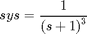
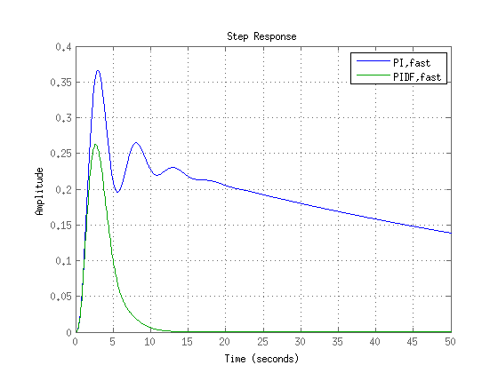

PID tuning algorithm for linear plant model
speziell pidF http://de.mathworks.com/help/control/ref/pidtune.html
Contents
PID Controller Design at the Command Line
This example shows how to design a PID controller for the plant given by:

% As a first pass, create a model of the plant and design a simple PI controller % for it. sys = zpk([],[-1 -1 -1],1); [C_pi,info] = pidtune(sys,'pi') % Examine the closed-loop step response (reference tracking) of the controlled % system. T_pi = feedback(C_pi*sys, 1); step(T_pi) % To improve the response time, you can set a higher target crossover frequency % than the result that pidtune automatically selects, 0.52. Increase the % crossover frequency to 1.0. [C_pi_fast,info] = pidtune(sys,'pi',1.0) % The new controller achieves the higher crossover frequency, but at the cost of % a reduced phase margin. Compare the closed-loop step response with the two % controllers. T_pi_fast = feedback(C_pi_fast*sys,1); step(T_pi,T_pi_fast) axis([0 30 0 1.4]) legend('PI','PI,fast') % This reduction in performance results because the PI controller does not have % enough degrees of freedom to achieve a good phase margin at a crossover % frequency of 1.0 rad/s. Adding a derivative action improves the response. % Design a PIDF controller for Gc with the target crossover frequency of 1.0 % rad/s. [C_pidf_fast,info] = pidtune(sys,'pidf',1.0) % The fields of info show that the derivative action in the controller allows % the tuning algorithm to design a more aggressive controller that achieves the % target crossover frequency with a good phase margin. Compare the closed-loop % step response and disturbance rejection for the fast PI and PIDF controllers. T_pidf_fast = feedback(C_pidf_fast*sys,1); step(T_pi_fast, T_pidf_fast); axis([0 30 0 1.4]); legend('PI,fast','PIDF,fast'); % You can compare the input (load) disturbance rejection of the controlled % system with the fast PI and PIDF controllers. To do so, plot the response of % the closed-loop transfer function from the plant input to the plant output. S_pi_fast = feedback(sys,C_pi_fast); S_pidf_fast = feedback(sys,C_pidf_fast); step(S_pi_fast,S_pidf_fast); axis([0 50 0 0.4]); legend('PI,fast','PIDF,fast');
C_pi =
1
Kp + Ki * ---
s
with Kp = 1.14, Ki = 0.454
Continuous-time PI controller in parallel form.
info =
Stable: 1
CrossoverFrequency: 0.52053
PhaseMargin: 60
C_pi_fast =
1
Kp + Ki * ---
s
with Kp = 2.83, Ki = 0.0495
Continuous-time PI controller in parallel form.
info =
Stable: 1
CrossoverFrequency: 1
PhaseMargin: 43.997
C_pidf_fast =
1 s
Kp + Ki * --- + Kd * --------
s Tf*s+1
with Kp = 2.72, Ki = 1.03, Kd = 1.76, Tf = 0.00875
Continuous-time PIDF controller in parallel form.
info =
Stable: 1
CrossoverFrequency: 1
PhaseMargin: 60
